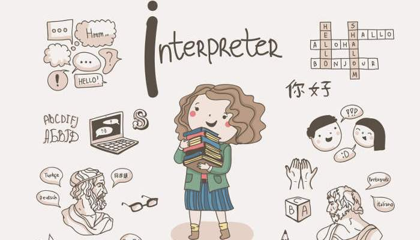

Podríamos decir que mi carrera profesional ha sido, cuanto menos, versátil. De carácter sociable, responsable y organizada; siempre me ha gustado tener la posibilidad de trabajar en equipo en diferentes ambientes multiculturales. La posibilidad de aprender de los demás, de sus culturas, ideas y percepción del entorno siempre me ha parecido la mejor manera de evolucionar uno mismo, como persona y como trabajador.
ÁREAS DE TRABAJO
TRADUCCIÓN E INTERPRETACIÓN (FR>ES // EN>ES)

Trabajar con distintos idiomas, conocer las culturas de las lenguas, el sentido de una expresión o la intencionalidad de la misma dependiendo del contexto supone siempre un reto personal. El volumen, el tono de la conversación varía según el contexto de la situación y del foco que se le quiera dar al discurso.
ORGANIZACIÓN Y DIRECCIÓN DE EVENTOS
La interpretación simultánea se abrio puertas en el mundo de los eventos. A raíz de mi participación en ellos como intérprete, decidí formarme y lanzarme a la organizaciń de diferentes actos. Tuve la oportunidad de trabajar en eventos institucionales, corporativos o de ocio; enfocados a la moda o al deporte.
En proceso... DESARROLLO FULL STACK
Dentro de las diferentes agencias de eventos, en cada proyecto, se solicitaban conocimientos de programación para el mantenimiento, creación o modificación de la propia página web del evento; por lo que, a raíz de ahí, comenzó mi interés por la programación y el desarrollo. Comencé a formarme de manera autodicacta y, junto con la ayuda de mi entorno personal, conseguí dar los primeros pasos en este nuevo mundo. Actualmente, curso Desarrollo Full Stack para formarme de manerea profesional en el sector.
.jpg)